A história de quem nasceu nas ondas e encontrou porto
A Sevá nasceu da paixão pela fermentação, pela natureza e pela liberdade de criar. O que começou em 2020, em meio a um período de transformação e incertezas, rapidamente se tornou algo maior do que uma simples produção caseira de cerveja.
Entre receitas, experimentações e descobertas, surgiu uma identidade própria. Cada cerveja ganhou personalidade, cada rótulo recebeu o nome de uma ave da Mata Atlântica e cada novo encontro com o público reforçou a mesma ideia: oferecer experiências autênticas para quem busca algo além do óbvio.
Hoje, a Sevá é cervejaria, restaurante e ponto de encontro em Camburi. Um lugar onde gastronomia autoral, cervejas artesanais e o estilo de vida do litoral se encontram para criar momentos que só poderiam existir aqui.
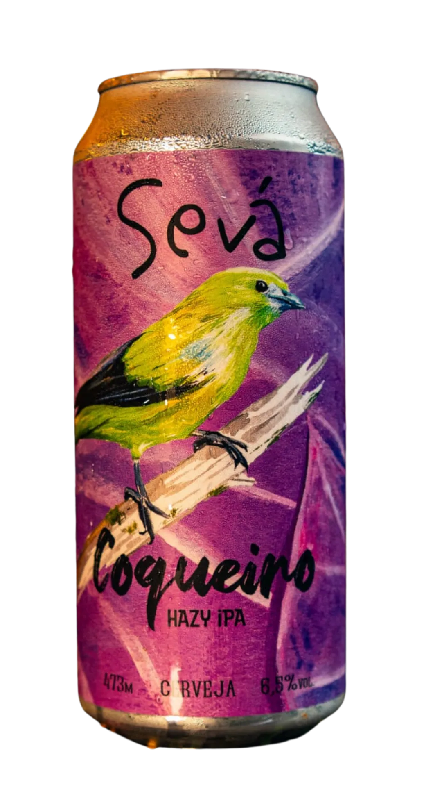
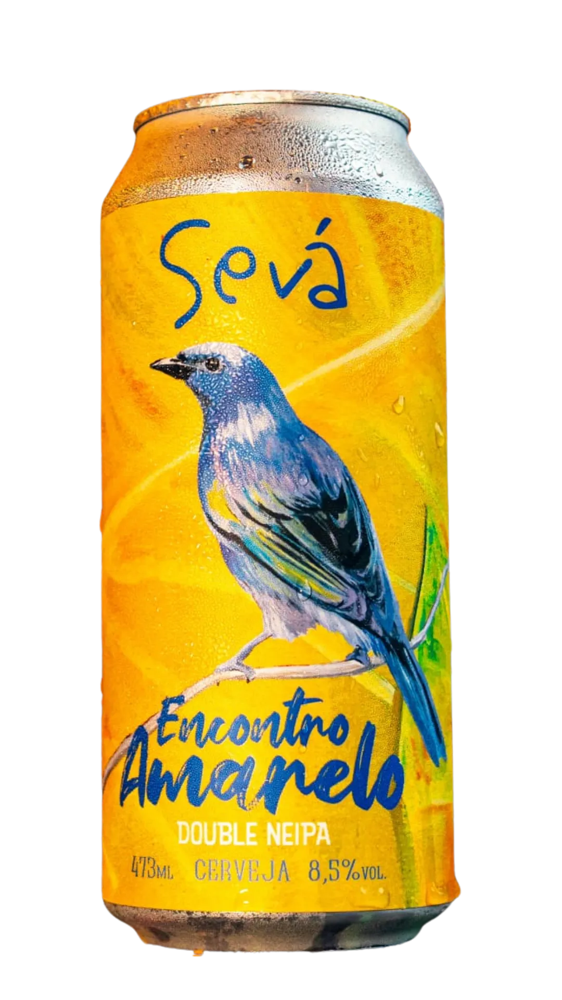
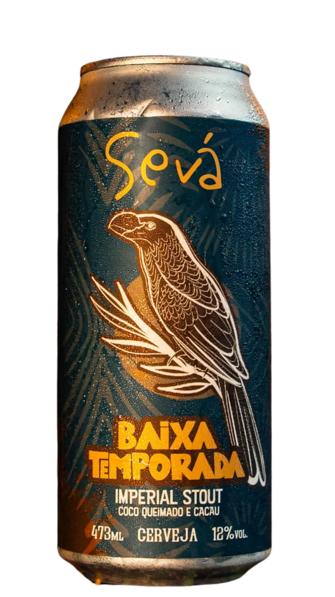
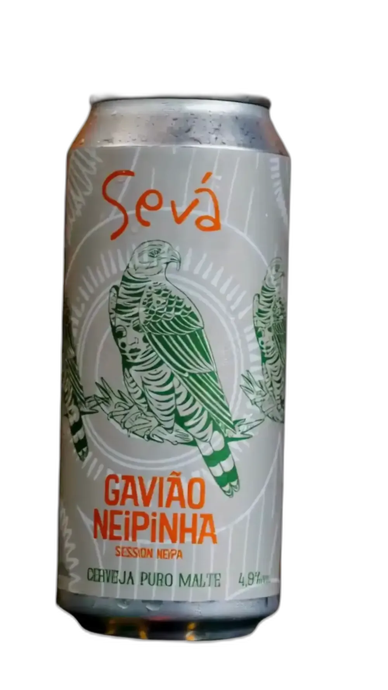
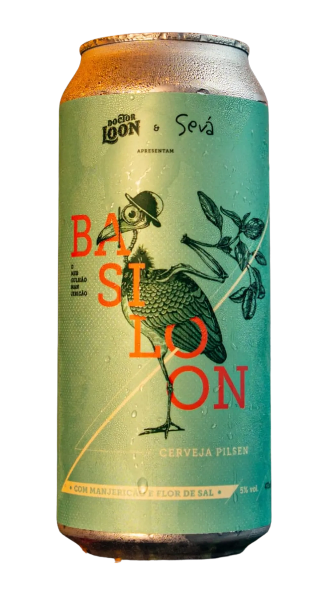
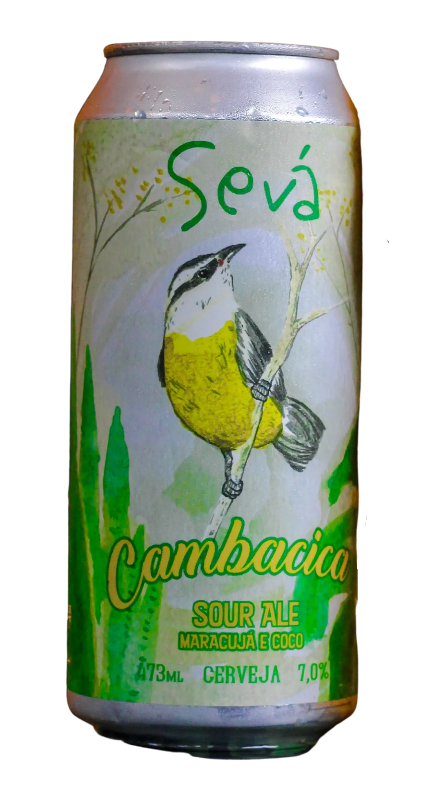

O nome Sevá é "aves" ao contrário, uma homenagem direta aos rótulos que carregam nomes de pássaros brasileiros. Mas vai além: em sânscrito, sevā significa "serviço com devoção".
É exatamente isso que tentamos fazer em cada chope, em cada prato, em cada experiência que proporcionamos em Camburi. Serviço com presença, com cuidado, com alegria.
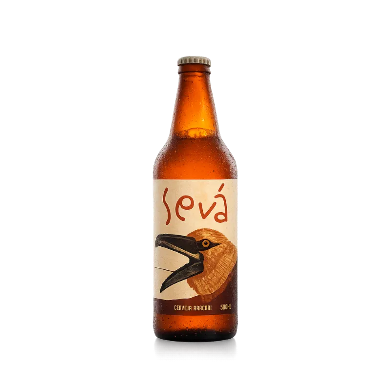
Em plena pandemia, João começa a brassar cerveja artesanal em casa. O primeiro rótulo, a Basilon Pilsen, é servido para amigos e vizinhos.
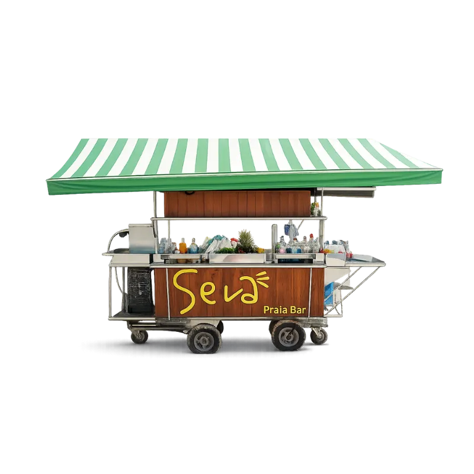
Com um carrinho e uma chopeira, a Sevá chegou à praia de Camburi. Primeira cervejaria artesanal a ganhar as areias.
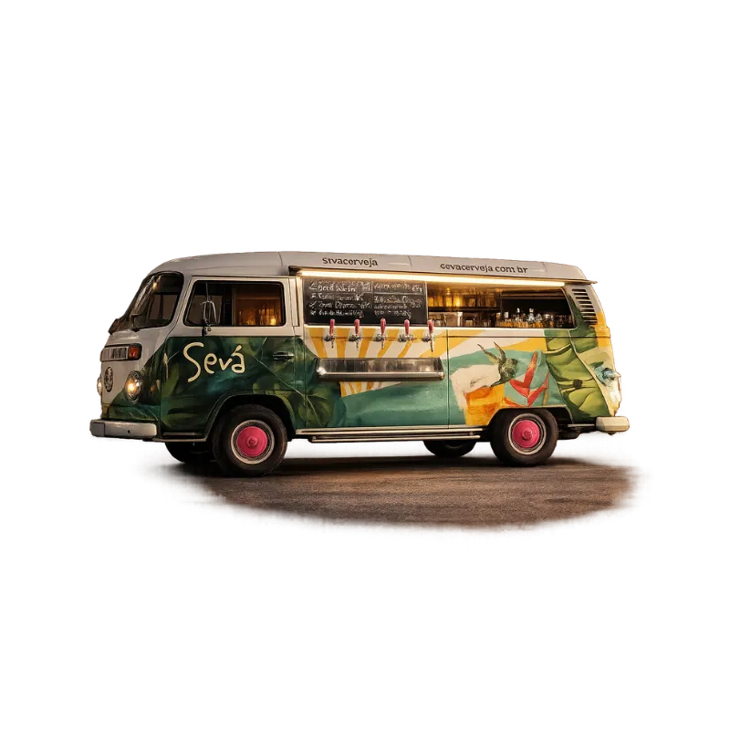
Uma kombinha adaptada com quatro torneiras de chope passa a fazer festas, eventos e as tradicionais sextas no Pomona. A cervejaria itinerante ganha o litoral norte.
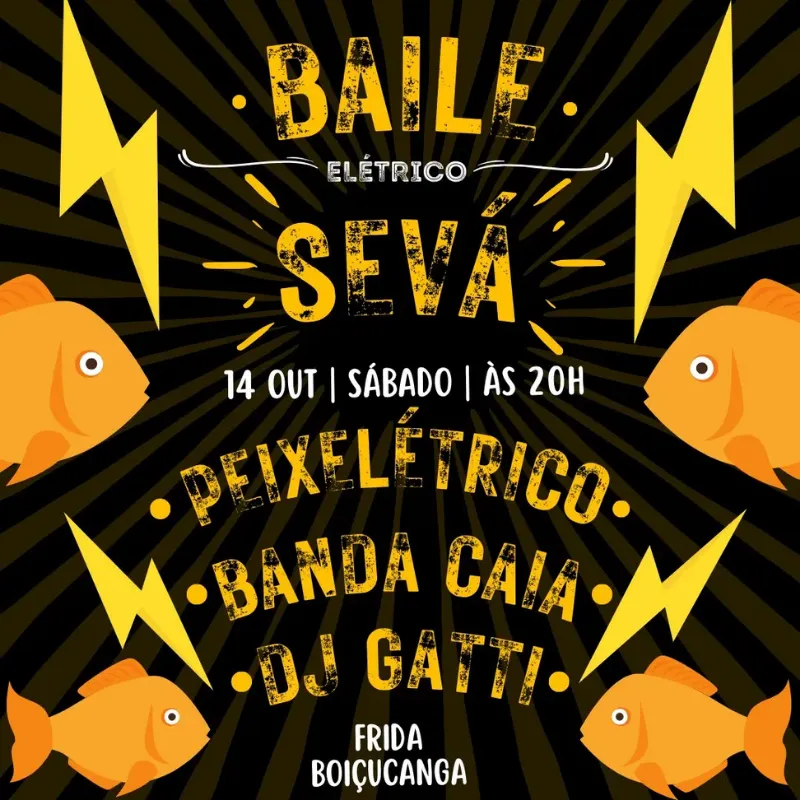
A Sevá passa a co-organizar eventos em Camburi e região, muitos shows e histórias para a memória. A cerveja vira pretexto para reunir comunidade.
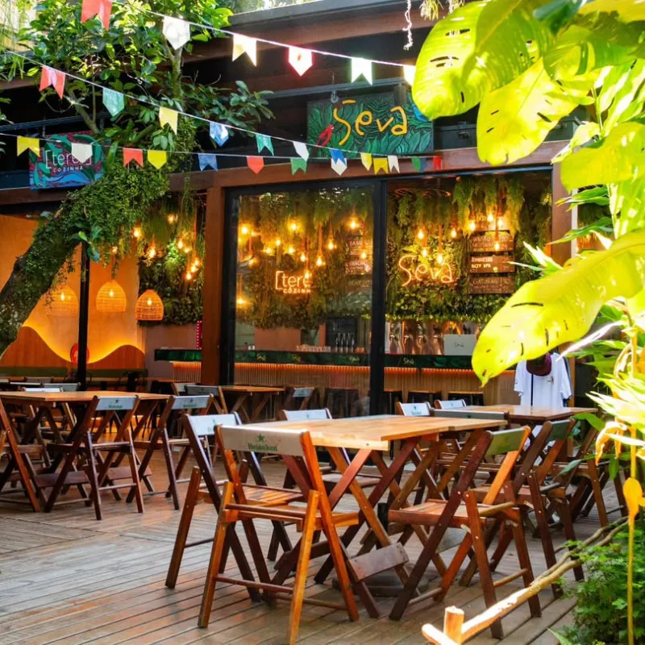
Em 2024, a Sevá encontra seu lar definitivo no Shopping Dois Amores, na Praia de Camburi. Cervejaria, restaurante e loja, tudo num só lugar.
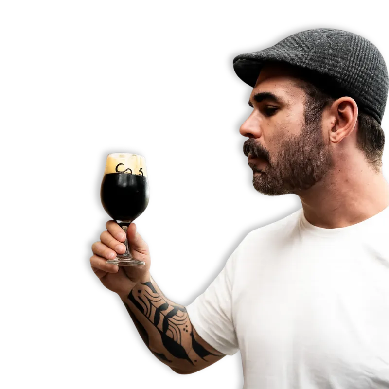
João é cervejeiro, cozinheiro e sonhador. Formado em gastronomia e autodidata em fermentação, passou anos experimentando antes de transformar a Sevá em realidade.
Cada cerveja da Sevá é um pedaço da sua visão: ingredientes locais, técnica apurada, e aquele algo a mais que só vem de quem faz com amor.
Venha nos conhecer